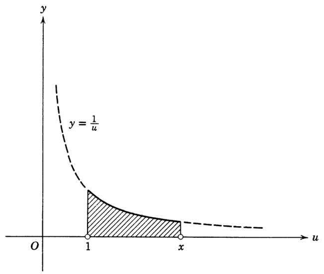
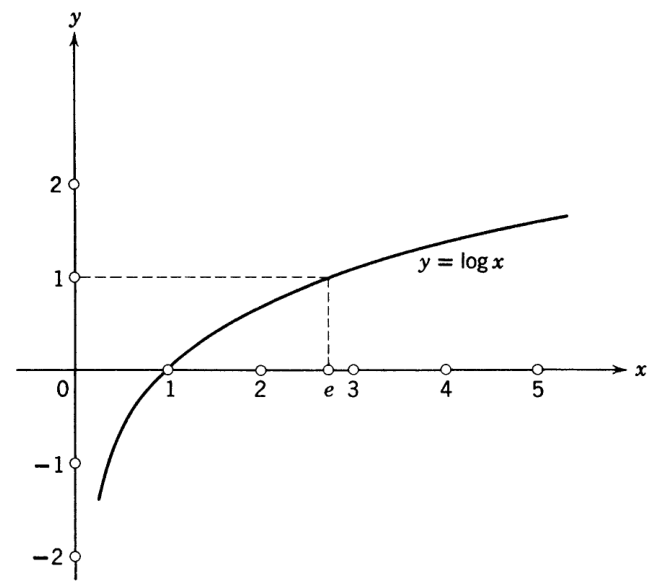

a. 对数函数的定义
在第 2.2 节中，对于任何不等于 −1 的有理数 α，我们都已把 ∫abxαdx 用 a,b 的幂表示出来。若 α=−1，则只得到了一个数列的极限表示：
∫abu1du=n→∞limn(nb/a−1).现在独立于第 2.2 节的讨论，引进不定积分 ∫1x(1/u)du 所表示的函数。¹ 从几何上看，它就是图 2.18 中双曲线下的面积。称它为 x 的对数，更确切地说，是 x 的自然对数，记为
logx=∫1xu1du.(16)由于 y=1/u 对一切 u>0 都连续且为正，函数 logx 就对一切 x>0 都有定义，并且连续而单调递增。
原注 1（第 145 页） 本节仍直接运用连续函数（这里是 1/u）的积分存在这一事实。一般证明见本章补充。

图 2.18 用面积表示
为方便起见，定义 logx 的不定积分取 1 为下限。由此可知
log1=0,(17)而且 x>1 时 logx 为正，0<x<1 时 logx 为负（图 2.19）。积分限 a,b 为正时，1/u 的任一定积分都可借下式（见第 143 页）用对数表示：
∫abu1du=logb−loga.(18)从几何上看，它给出双曲线 y=1/x 下、纵线 x=a 与 x=b 之间的面积。

图 2.19 自然对数
b. 对数的加法定理
下述基本性质说明，把 logx 称为传统意义上的“对数”是恰当的。
加法定理。 对任何正数 x,y，
log(xy)=logx+logy.(19)证明。 把加法定理写成 log(xy)−logy=logx，即
∫yxyv1dv=∫1xu1du.这里特意用不同的字母表示两边的积分变量。只要适当选择分割和中间点，就能使两边的近似和相等，由此将得出两个积分相等。先设 x>1。有
∫1xu1du=n→∞limi=1∑nξi1Δui,其中 u0=1,u1,u2,…,un=x 是 [1,x] 的分点，ξi 位于第 i 个小区间。置 vi=yui, ηi=yξi，则 v0,v1,…,vn 给出 [y,xy] 的一个分割，其中间点为 ηi=ξiy。显然 Δvi=yΔui，所以
i=1∑nηi1Δvi=i=1∑nξi1Δui.让 n 趋于无穷，就得到 x>1 时所需的积分恒等式。
x=1 时，由 log1=0，加法定理立即成立。若 0<x<1，注意到 1/x>1，所以
logx+logy=logx+log(x1xy)=logx+logx1+log(xy)=logx1+logx+log(xy)=log(x1x)+log(xy)=log1+log(xy)=log(xy).至此，加法定理得证。
另一个证明是利用公式 (3)（第 134 页），按此公式，
logx=n→∞limn(nx−1).于是
log(xy)=limn(nxy−1)=lim[n(nx−1)ny+n(ny−1)]=[limn(nx−1)](limny)+limn(ny−1)=logx+logy,因为 limny=1（见第 64 页）。
令 y=1/x，由加法定理得到 log1=logx+log(1/x)，即
logx1=−logx.(20)一般地，
logxy=logy+logx1=logy−logx.(21)对 n 个因子的积反复使用加法定理，得
log(x1x2⋯xn)=logx1+logx2+⋯+logxn.特别地，对任何正整数 n，
log(xn)=nlogx.(22)因 x0=1，这个恒等式也适用于 n=0。对负整数 n，只要注意
log(xn)=log(x−n1)=−log(x−n)=−(−n)logx=nlogx,就把它推广了。对任一有理数 α=m/n 和任一正数 a，可以作 aα=am/n=x。这时有
logx=n1logxn=n1logam=nmloga=αloga.所以恒等式
log(aα)=αloga(23)对所有正实数 a 和有理数 α 都成立。
译者注 加法定理的第一个证明里，把横坐标全部放大 y 倍，每个窄条的宽就乘以 y。但双曲线上的高度恰好变成原来的 1/y，所以相应的矩形面积逐项相等，连取极限之前的近似和都相等。